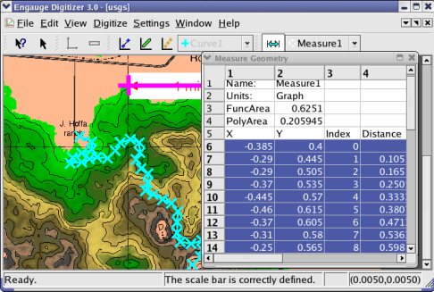

Engauge Digitizer - Manual Map Tutorial
Engauge Digitizer - Manual Map Tutorial
Engauge Digitizer is limited in its map capabilities. Before digitizing
a map, you should review the
map constraints.
Digitizing A Map Image
The following secion applies a Measure to a map, to get measurements.
A Measure is used rather than a Curve, since Curves are drawn as single valued
functions by default. However, Measures cannot be exported. If you want to
export digitized map data, you will have to use Curves rather than Measures.
This should not be a problem, since you can change a Curve's properties
from "Single Valued Function" to "Contour". Contour Curves behave just
like Measures, while also offering export capability.
The following steps digitize a map that has a scale bar:
- Import the usgs.png case from the Samples directory, using
File/Import as shown. Not shown are the other methods of importing:
using the "-import" command line option,
by copying and pasting, and by dragging and dropping.

- By default, the processed image is shown. Since the original image
is more useful in this particular case, we select the original image
by choosing View/Original Image.

- Click on the Scale Bar button before entering the scale bar. This
will define the coordinate system

- Click on one end of the scale bar in the picture, then drag to the other
end of the scale bar in the picture, to create the scale bar. Enter the length.

- Bring up the Measure Geometry window by selecting the View/Measure Geometry
menu option

- Click on the Measure Points button before entering measure points.
These will contain the digitized map data

- Click on the map to add measure points. Repeat until the map is
covered with a sufficient number of measure points

- Export the measured data into a tabular text file by selecting text in
the measure geometry window. The
selected text can then be copied or dragged into another application.
